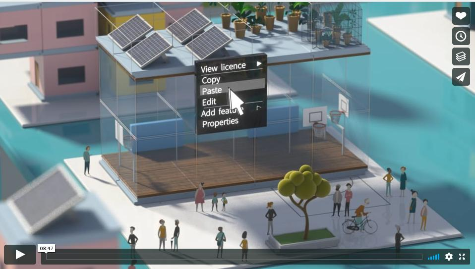

## Public Money? Public Code! ### Über einen riesigen blinden Fleck der Digitalisierungsdebatte <br> <br> <br> <div><a href="https://fsfw-dresden.de/pmpc">https://fsfw-dresden.de/pmpc</a></div> </div> <!-- end of div-left-full -->
# Wer spricht? Carsten Knoll, <ul> <li>Post-Doc <br>@ Institut für Regelungs- und Steuerungstheorie</li> <li class="fragment"> Mitglied <a href="https://tuuwi.de">TUUWI</a> (TU-Umweltinitiative) </li> <li class="fragment"> Gründungsmitglied (<a href="https://fsfw-dresden.de">FSFW</a>)<br> Hochschulgruppe Freie Software und Freies Wissen </li> <li class="fragment fade-down"> Ko-Organisator <a href="https://dresden.bits-und-baeume.org/">Bits&Bäume Dresden</a> <br> (Konferenz/Netzwerk für Nachhaltigkeit und Digitalisierung) </li> <li class="fragment fade-down"> Support-Mitglied <a href="https://fsfe.org/">Free Software Foundation Europe</a> <span class="small">(bisher weitgehend passiv)</span> </li> </ul>
## Hochschulgruppe für Freie Software und Freies Wissen <div class="left_full"> <ul> <li class="fragment"> 2014 geründet </li> <li class="fragment"> Projekte: <ul> <li class="fragment"> Verschlüsselungsgewinnspiel </li> <li class="fragment"> Linux-Install-Parties </li> <li class="fragment"> Programm-Papier </li> <li class="fragment"> Uni-Stick, ... </li> <li class="fragment"> Workshops (Mailverschlüsselung, Versionsverwaltung, Programmierung) </li> </ul> </li> </ul> </div> <!-- end of div-left-full -->
## Digitalisierung?? <div style="display:inline-block; width:47%; vertical-align: text-top; border:none;"> </div> <div style="display:inline-block; width:47%; vertical-align: text-top; border:none;"> </div> <br> <div style="display:inline-block; width:47%; vertical-align: text-top; border:none;"> </div> <div style="display:inline-block; width:47%; vertical-align: text-top; border:none;"> </div> <br> <div class="fragment"> → Schwammiges Hype-Wort </div>
## "Digitalisierung ohne Software ist nur bunter Sand" <div> <!--<a href="https://web.archive.org/web/20030216071253/http://www.integrale.de/">--> <!--</a>--> </div> <br> <div class="small fragment fade-up"> Sand → Silizim → Mikrochips </div>
## Quellcode vs. Kompilat (1) ### Wie wird Software lebendig? <div> <!--<a href="https://web.archive.org/web/20030216071253/http://www.integrale.de/">--> <img src="images/pmpc/source-code-583537_960_720.jpg" class="raw" width=60% style="margin: 0px; padding:0px;" > <!--</a>--> </div> <br> <div class="fragment fade-up"> Quellcode → „Compiler“ → Maschinen Code </div> <br> <div class="fragment fade-up"> Live Beispiel (Kompilierung von <code class="bgg">helloworld.c</code>) </div>
## Quellcode vs. Kompilat (2) <br> <div class="left_c"> <h3>Quellcode</h3> <br> <div class="fragment fade-right"> ⊕ Einfach verständlich </div> <div class="fragment fade-right"> ⊕ Enthält Kommentare </div> <div class="fragment fade-right"> ⊕ Nachvollziehbare Änderungen (Versionsverwaltung) </div> <div class="fragment fade-right"> ⊖ Nicht ausfürbar </div> </div> <div class="right_c fragment"> <h3>Maschinencode</h3> <br> <div class="fragment fade-left"> ⊖ Quasi unverständlich </div> <div class="fragment fade-left"> ⊖ Keine Kommentare </div> <div class="fragment fade-left"> ⊖ kaum nachvollziehbare Änderungen </div> <div class="fragment fade-left"> ⊕ ausfürbar </div> </div>
## Freie Software: Vier Freiheiten <div> <!--<a href="https://web.archive.org/web/20030216071253/http://www.integrale.de/">--> <br> <!--</a>--> </div>
## Proprietäre Software <div> <!--<a href="https://web.archive.org/web/20030216071253/http://www.integrale.de/">--> <br> <div class="fragment"> Typisches Geschäftsmodell: Verkauf von Lizenzen </div> <!--</a>--> </div>
## Propriet√§re Software - Nachteile <div class="left_full"> <ul> <li class="fragment"> ‚ÄûVendor Lockin‚Äú (Abh√§ngigkeit) </li> <li class="fragment"> Unsicherheit (Hintert√ºren) </li> <li class="fragment"> Nicht selbst anpassbar </li> <li class="fragment"> Kein Lerneffekt <br> <br> <br> </li> <li class="fragment fade-up"> ü§î Warum ist Microsoft Office eigentlich <em>kostenlos</em> f√ºr Studierende ü§î <br> <div class="small fragment fade-down">Stichwort <a href="https://fsfw-dresden.de/landesvertrag">Landesvertrag</a></div> </li> </ul> </div> <!-- end of div-left-full -->
## Aktueller Stand <div> <br> <!--</a>--> </div> <div style="display:inline-block; width:30%; vertical-align: text-top; border:none;">Haushalte <br> </div> <div class="fragment grow" style="display:inline-block;width:30%; vertical-align: text-top; border:none;">Staat <span class="tiny" style="position:relative; top:-50px; background: rgba(0, 0, 0, 0.5);"> Bildquelle: <a href="https://www.dresden.de/de/rathaus.html.php"> https://www.dresden.de/de/rathaus.html.php</a></span> </div> <div style="display:inline-block;width:30%; vertical-align: text-top; border:none;">Wirtschaft <img src="images/pmpc/wirtschaft.jpg" class="raw" width=100% style="margin: 0px; padding:0px;" > </div>
## Beispiel: Stadtverwaltungen <div> <!--<a href="https://www.meschede.de/rathaus-service/politik-verwaltung/aufbau-der-stadtverwaltung/">--> <br> <span class="tiny" style="position:relative; top:-50px; background: rgba(0, 0, 0, 0.5);"> Bildquelle: <a href="https://www.meschede.de/rathaus-service/politik-verwaltung/aufbau-der-stadtverwaltung/"> https://www.meschede.de/rathaus-service/politik-verwaltung/aufbau-der-stadtverwaltung/</a></span> <!--</a>--> </div> <div class="left_full"> <ul> <li class="fragment"> Proprietäre Software dominiert (Betriebssystem, Office, ...) </li> <li class="fragment"> Freie Software ist die Ausnahme </li> </ul> </div> <!-- end of div-left-full -->
## Exkurs: LiMux (München, 2003-2020) <div class="bg_grey02"> <!--<a href="https://www.meschede.de/rathaus-service/politik-verwaltung/aufbau-der-stadtverwaltung/">--> <br> <span class="tiny" style="position:relative; top:-10px; background: rgba(0, 0, 0, 0.5);"> Bildquelle: <a href="https://de.wikipedia.org/wiki/Datei:LiMux_(logo).svg"> https://de.wikipedia.org/wiki/Datei:LiMux_(logo).svg</a></span> <!--</a>--> </div> <div class="left_full"> <ul> <li class="fragment"> Stadtrat 2003: Umstellung aller 12K Rechner auf freie Software </li> <li class="fragment"> Kontroverse Diskussionen </li> <li class="fragment"> Ende 2013: Umstellung abgeschlossen </li> <li class="fragment"> 2014: Dieter Reiter (gilt als MS-Fan) wird OB </li> <li class="fragment"> 2014: Überprüfung <span class="small">(Auslöser: Schwierigkeiten mit Mail-Anbindung auf Smartphones)</span> </li> <li class="fragment"> Microsoft 2013: Zentrale → München </li> <li class="fragment"> Stadtrat 2017: Rückmigration </li> </ul> </div> <!-- end of div-left-full -->
## Tourismus-Apps (Komuna GmbH) <div> </div> <br> <div class="fragment fade-right"> Eine <a href="https://play.google.com/store/search?q=Komuna%20GmbH&c=apps&hl=de">Firma</a> verkauft jeder Kommune quasi das gleiche Produkt mit einer anderen Verpackung </div>
## → Naheliegende Forderung <div> </div> <br> <div class="fragment fade-right"> Kampagne der FSFE: <a href="https://publiccode.eu/">https://publiccode.eu/</a> </div>
<div> </div> <br> <div class="fragment grow"> <a href="https://publiccode.eu/de/openletter/">https://publiccode.eu/de/openletter/</a> </div>
## Forderung: <br> <br> <br> <div class="myquote fragment grow"> “Sorgen Sie für rechtliche Grundlagen, die es erfordern, dass öffentlich finanzierte Software, die für die öffentliche Verwaltung entwickelt wurde, unter einer Freie-Software- und Open-Source-Lizenz öffentlich zugänglich gemacht werden muss.” </div>
<div> <br> <!--<a href="https://web.archive.org/web/20030216071253/http://www.integrale.de/">--> <br> <!--</a>--> </div> <div class="left_full"> </div> <!-- end of div-left-full -->
## Videos <div> <a href="https://vimeo.com/234308738">  </a> <a class="tiny" href="https://vimeo.com/234308738"><br> https://vimeo.com/234308738</a> <br> </div> <div > <a href="http://www.viewpure.com/_ZaDuinGf2o?start=0&end=0"> </a> <br> <a class="tiny" href="http://www.viewpure.com/_ZaDuinGf2o?start=0&end=0">http://www.viewpure.com/_ZaDuinGf2o</a> </div>
## Aktueller Stand: Positiv-Beispiele <div class="left_full"> Schleswig Hollstein (Jamaika Koalitionvertrag) <br> <div class="myquote fragment"> “Voraussetzung für die Digitalisierung in allen Bereichen sind höchste Standards beim Datenschutz und der IT-Sicherheit. [...] Dies erreichen wir durch den verstärkten Einsatz von unabhängig überprüfbarer Hard- und Software, [...], Open-Source-Technologie” </div> <div class="myquote fragment"> “Wir verfolgen den vordringlichen Einsatz von Open- Source Software, auch um Abhängigkeiten der öffentlichen Verwaltung von einzelnen Softwareanbietern soweit wie möglich zu reduzieren. Um dieses Ziel zu erreichen, werden wir unter anderem die entsprechenden Ausschreibungsbedingungen überarbeiten. Eine vollständige Ablösung ist das langfristige Ziel.” </div> </div> <!-- end of div-left-full -->
## Aktueller Stand 2 <div class="left_full"> <ul> <li class="fragment"> Offener Brief hat 22K Unterschriften </li> <li class="fragment"> Sehr positives Echo aus der <em>Fachwelt</em> </li> <li class="fragment"> Überschaubare Resonanz in außerhalb der IT- bzw. FOSS-Blase <br> <br> <br> </li> </ul> </div> <!-- end of div-left-full --> <div class="fragment fade-up"> <div class="fragment grow"> → Was tun? <br> <br> </div> </div> <div class="fragment fade-up small"> (Überleitung zur Diskussion) </div>